Kasten Multi-Cluster
| This section is for your information only. You can not execute this section on this lab environment because we are using a shared cluster for many users. Feel free to read through this section however to understand how you would set up Kasten for Multi-Cluster backup and restore. |
The demo environment on the Red Hat Demo Platform does not have that restriction. Feel free to use that environment after Red Hat One.
1. Introduction
Each Veeam Kasten deployment can function completely independent of other instances, without dependence on a separate customer-hosted or SaaS control plane - making it ideal for GitOps-style management and use in fully airgapped environments. However, Kasten also provides a user interface for providing consolidated observability and centralized management of globally configured Kasten resources - Kasten Multi-cluster Manager.
In this exercise you will configure Kasten Multi-cluster Manager, join a second cluster, and distribute a centrally managed location profile to both clusters.
As each learner only has a single cluster, you will need to work with a partner, designating (1) user/cluster as cluster-1 and (1) user/cluster as cluster-2.*
|
2. Configuring Primary Cluster
This section should be completed by the cluster-1 user ONLY.
|
The Primary cluster defines and stores all global resources, such as Policies and Profiles, and also aggregates a subset of cluster metrics for centralized reporting.
-
In the Kasten Dashboard, select Multi-Cluster from the sidebar.
-
Under Promote to Primary, click Setup.
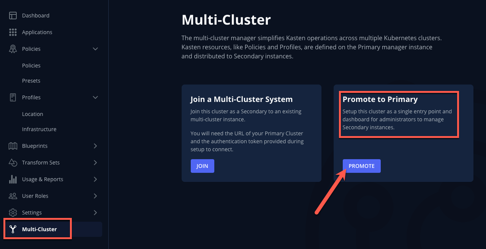 -
Specify
cluster-1as the Primary Name and click Promote Cluster → Confirm.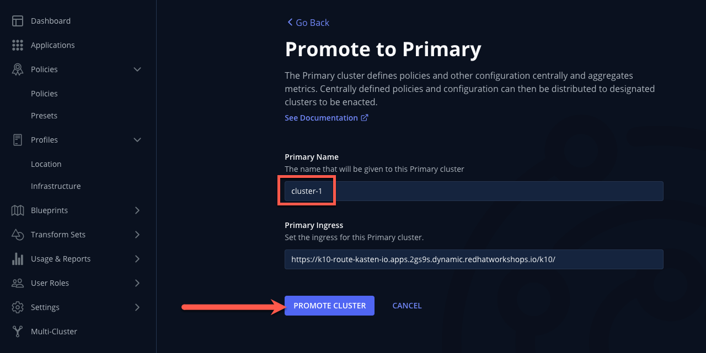After setup completes, you should see the Multi-cluster Manager view.
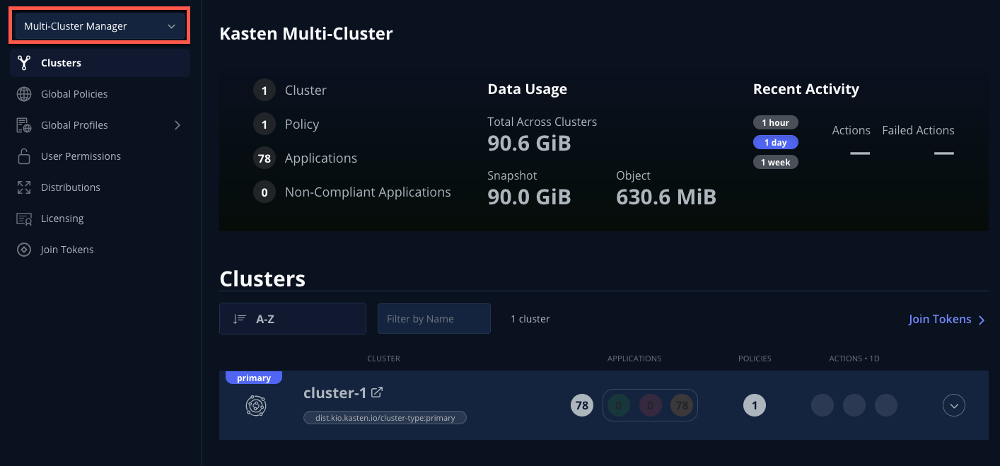A Kasten cluster can also be promoted to the primary cluster role declaratively using Helm/Operand parameters. See docs.kasten.io for details. -
Select Join Tokens from the sidebar and click + Create New Join Token.

-
Specify
lab-tokenas the Name and click Confirm.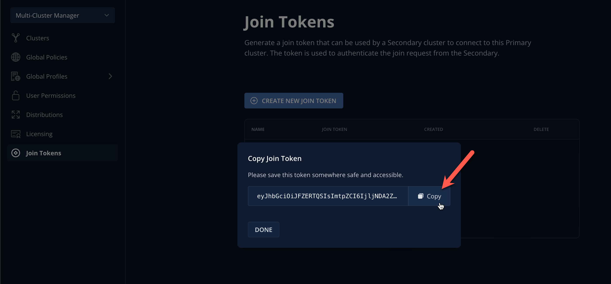Join Tokens are a type of Kubernetes Secret that can be created declaratively. See docs.kasten.io for examples. A single token can be used for multiple clusters. Deleting tokens has no impact on clusters that have already joined multi-cluster, but will prevent additional clusters from joining using the deleted token.
-
Click Copy to copy the token value to the clipboard and send the value to your
cluster-2partner via one of the following:-
Email/Slack/etc.
-
Slowly reading it aloud 😡
-
Carrier pigeon 🪶
-
Writing it down on a Post-It and burning it after use 🤷♂️
-
Probably stick with Email/Slack/etc. 👍
-
In real life, token values could be distributed to clusters using any Kubernetes Secrets management solution (ex. Vault + External Secrets Operator)
-
-
Click Done.
3. Joining Multi-Cluster from Secondary
This section should be completed by the cluster-2 user ONLY.
|
-
In the Kasten Dashboard, select Multi-Cluster from the sidebar.
-
Under Join a Multi-Cluster System, click Join.

-
Paste the
lab-tokenvalue from the primary cluster into the Token field.The join token also encodes the Kasten ingress URL required for a secondary to reach the primary cluster. If an alternate URL is required in a production environment, this value can be overridden as seen in the UI. -
Specify
cluster-2as the Local Cluster Name and click Use Current to populate Local Cluster Ingress with the current Kasten Route value.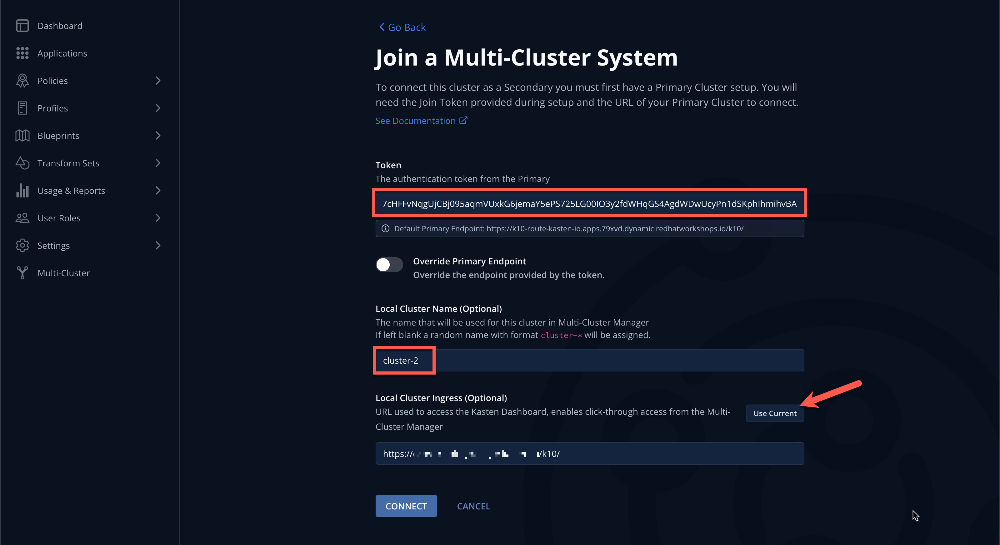 -
Click Connect → Yes to join
cluster-2.After a few moments you should observe the Multi-Cluster status page indicating the cluster has been connected to
cluster-1as a primary.
Joining secondary clusters can also be automated as part of a GitOps-style deployment by creating a mc-joinSecret andmc-join-configConfigMap on the secondary cluster to provide the join token and name/ingress details. See docs.kasten.io for details.
4. Managing Global Resources
This section should be completed by the cluster-1 user ONLY.
|
-
In the
cluster-1Kasten Dashboard, select Multi-Cluster Manager from the dropdown menu and validate the Clusters page now displays both clusters.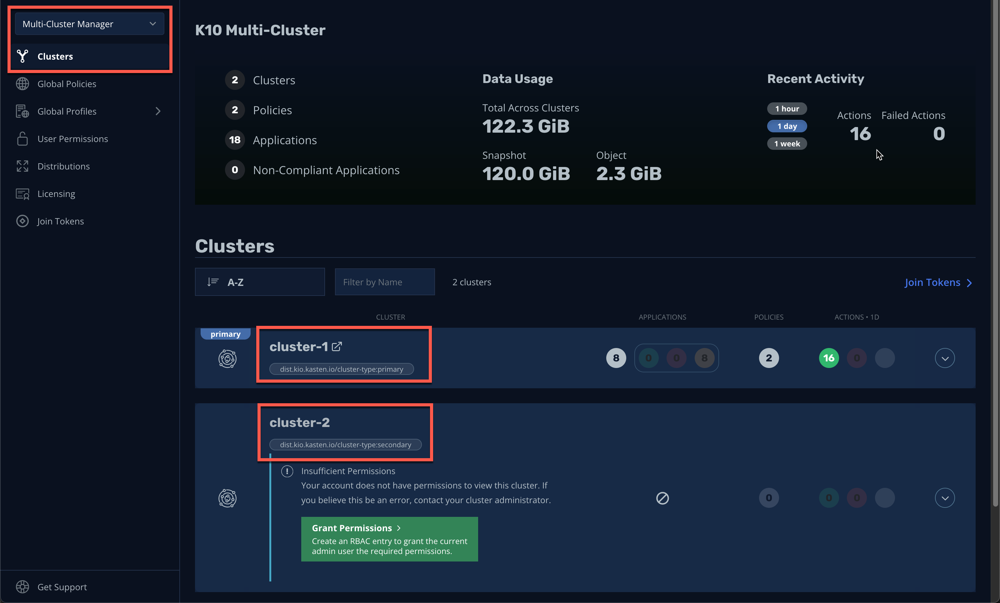 -
Click the Grant Permissions button to configure permissions for the current Kasten Dashboard user.
This will pre-fill a form to extend the
k10-multi-cluster-adminClusterRole to the current user for all current and future Kasten clusters.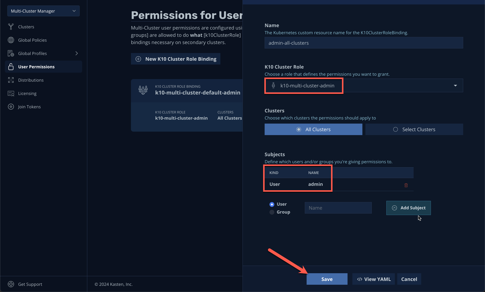In a production environment this can be modified to give granular control over a subset of clusters to different users or groups. -
Keep the default settings and click Save.
-
Select Clusters from the sidebar and click into
cluster-2to validate it is accessible. The sidebar dropdown menu can be used to browse between available clusters and the Multi-Cluster Manager.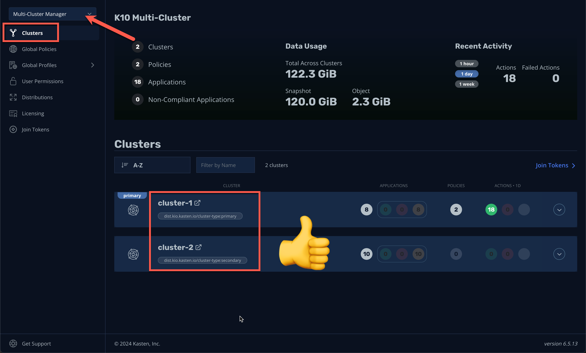 -
In Kasten Multi-Cluster Manager, select Global Profiles → Location from the sidebar and click + New Profile.
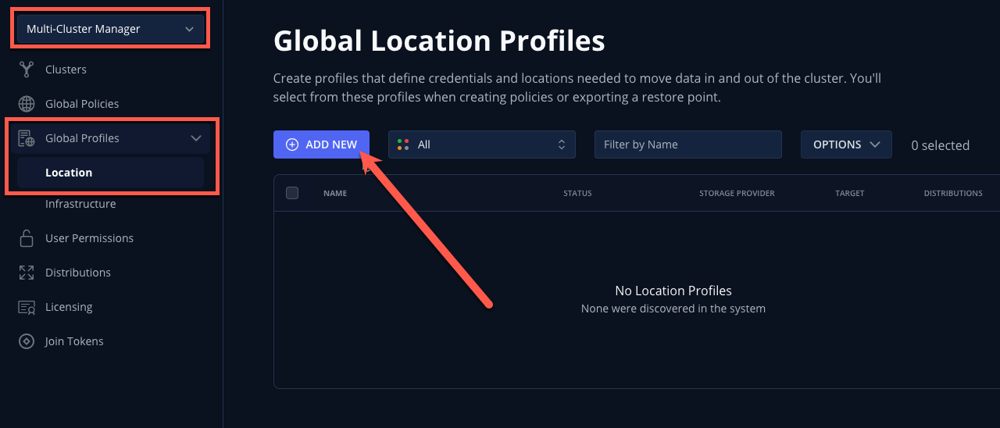 -
Fill out the following fields and click Next:
Profile Name
global-profile-exampleStorage Provider
S3 Compatible
-
In the Web Terminal, run the following to fetch your existing Ceph Object Gateway bucket details:
export CEPH_S3_ENDPOINT="https://$(oc get route \ s3 -n openshift-storage -o jsonpath='{.spec.host}')" export AWS_ACCESS_KEY_ID=$(oc get secret \ rook-ceph-object-user-ocs-storagecluster-cephobjectstore-ocs-storagecluster-cephobjectstoreuser \ -n openshift-storage -o jsonpath='{.data.AccessKey}' | base64 --decode) export AWS_SECRET_ACCESS_KEY=$(oc get secret \ rook-ceph-object-user-ocs-storagecluster-cephobjectstore-ocs-storagecluster-cephobjectstoreuser \ -n openshift-storage -o jsonpath='{.data.SecretKey}' | base64 --decode) printf '%s\n' 'ACCESS KEY:' ${AWS_ACCESS_KEY_ID} 'SECRET KEY:' ${AWS_SECRET_ACCESS_KEY} 'ENDPOINT:' ${CEPH_S3_ENDPOINT} -
Return to the Kasten Multi-Cluster Manager and fill out the following fields:
S3 Access Key
Paste
ACCESS KEYvalueS3 Secret
Paste
SECRET KEYvalueEndpoint
Paste
ENDPOINTvalueRegion
us-east-1Bucket
kasten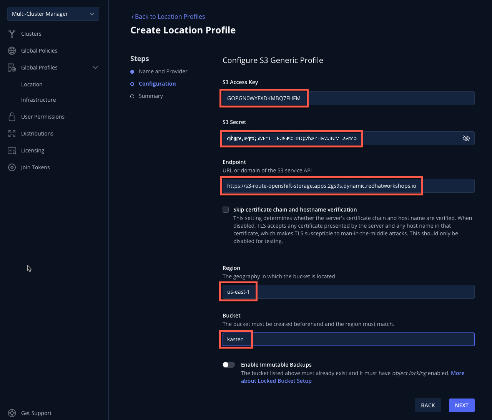 -
Click Next → Submit.
-
Select Distributions from the sidebar and click + New Distribution.
Distributions define which global resources should be synced with which clusters, allowing administrators to define label-based rules to automate resource distribution for new Kasten installs joining multi-cluster.
-
Fill out the following fields:
Name
example-distributionClusters
Select
dist.kio.kasten.io/cluster-type:primarySelect
dist.kio.kasten.io/cluster-type:secondaryResources
Select
global-profile-example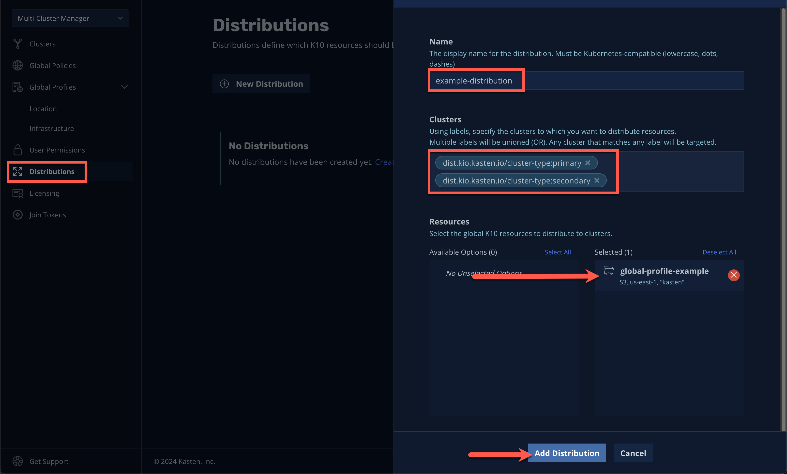This configuration will ensure the
global-profile-exampleLocation Profile is synced to all current and future Kasten clusters. -
Click Add Distribution.
You should observe that the distribution has been synced to the selected clusters.
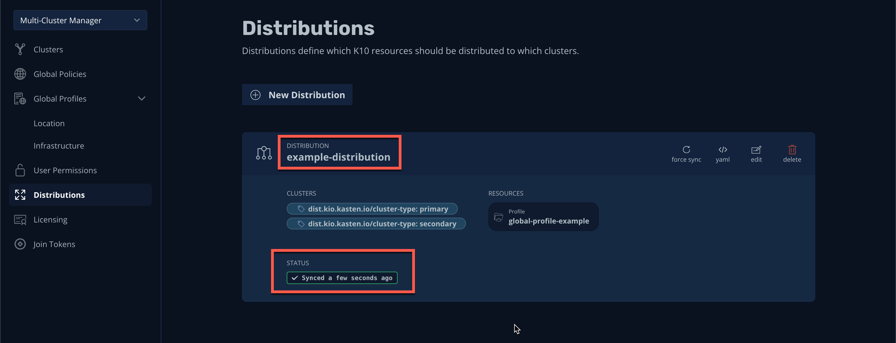You can view a summary of global resources for each cluster from the Multi-Cluster status page as shown below. 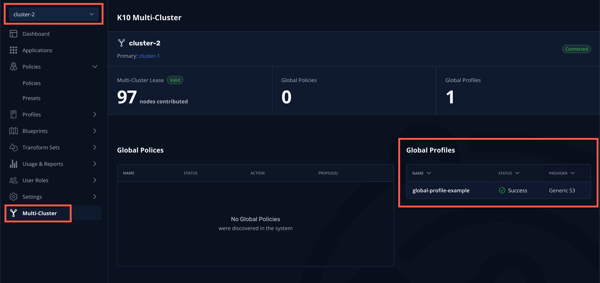